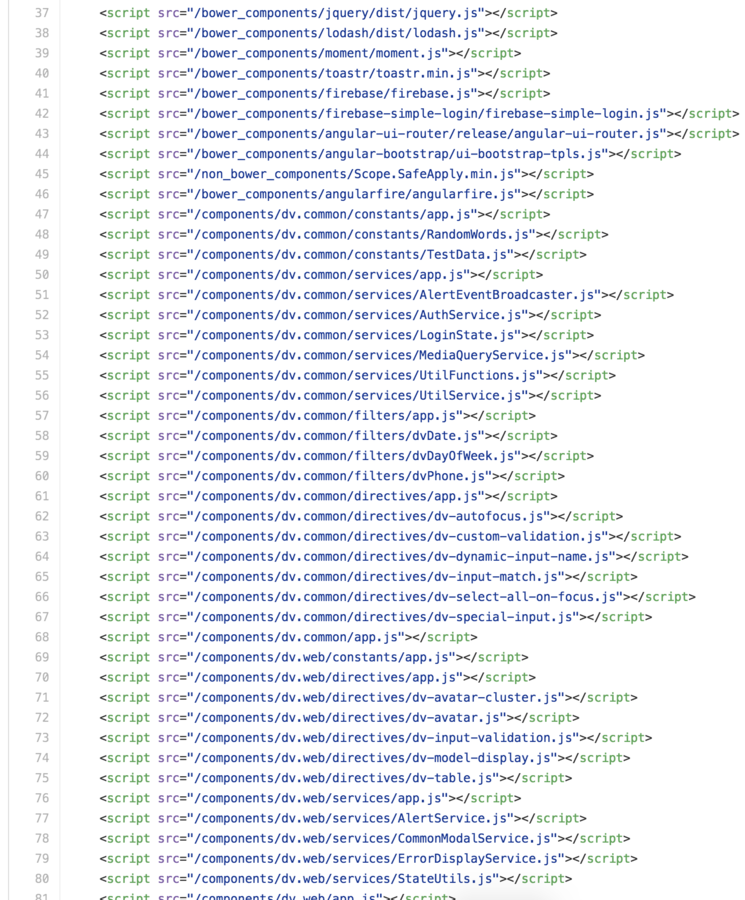
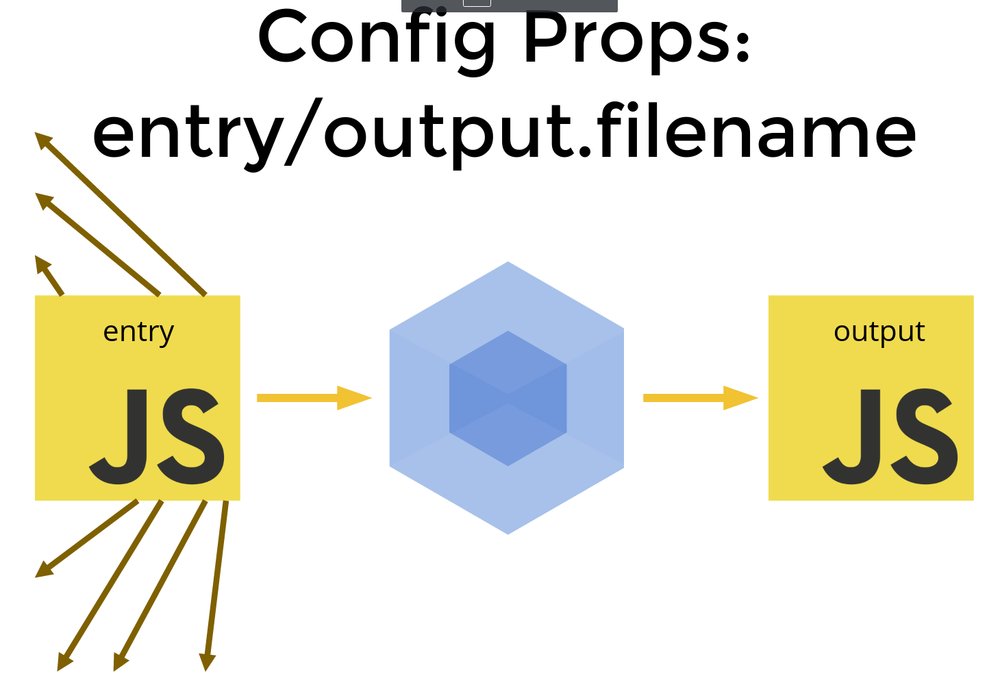

Говорим о новом
Что хорошего даёт разработчику вебпак 2
Автор: Давыденков Михаил
node.js стеку в Нетологии ~ 1 год
Тогда это был прорыв. Сейчас мы можем лучше
Webpack. Понимание

- История про gzip js файлов на Нетологии
- История про стили на Фоксфорде
Жизнь без бандлов
Главное назначение webpack - построение графа зависимостей, и разбиение его на бандлы, в которых достаточно удобно упорядочивать эти зависимости

Важно понимать, что построение графа зависимостей основано на СТАТИЧЕСКОМ анализе кода. JS код не исполняется, чтобы построить дерево зависимостей (поэтому не может быть условных зависимостей)
Buzzwords
- small tips
- tree-shaking
- code splitting
- commons chunking
- longterm caching
- offline with service workers
- testing and code coverage
- deploy
Small tips (not only webpack related)
- Chrome debug-mode! node-nightly --inspect (or use latest node version)
- Source maps - devtool (source-map for prod, eval for development)
- pathinfo - for better navigation in development!
- keep all tasks in package.json and compose package.json tasks using pre-* and post-* tasks
- babel-loader allows to remove 'use-strict' from js files (strict by default)
- use shortcuts (npm i -D package-name)
- use npm-cache-install instead of npm i (npm-cache-insall install -> nci install)
- use yargs to keep options parsing simple
- 1 config for test/dev/prod using webpack-config-utils (KISS principle)
- TDD (karma still > than AVA)
- webpack.name.babel.js - to transpile config itself (note babel postfix, es6 modules, etc.)
Tree shaking
Inspired by rollup.js
Doesn't work with require.js
Use es2015 imports
see helpers.js (inspect result with source maps)
.babelrcCode splitting
Всё в один бандл - плохая стратегия. Хочется маленькие бандлы, хочется грузить код когда необходимо (при переходе к тяжёлым частям приложения)
Выход - динамические импорты. Выносим heavy lifting в отдельные бандлы (d3, тяжёлые библиотеки типа react, lazy evaluation approach) (Смотрим демку про System.import, говорим о require.ensure )
Commons chunking
Commons chunking
Каждый неймспейс/страницу веб сервиса можно рассматривать как отдельное приложение (entry points in webpack config). И зачастую у каждого из этих приложений есть общий код, который хочется кешировать в браузере (реакт, редакс, плагины, любой вендор код должен быть отделен от логики приложения). При переходе между приложениями грузить только маленькие бандлы. (поговорить про инжект в head/body)
Можно использовать webpack.optimize.CommonsChunkPlugin (Смотрим дифф )
Чтобы заинжектить в html лейаут скрипт теги используется HtmlWebpackPlugin
Longterm caching
Дайджесты на коммон чанкс пересчитываются на каждый билд. Можно добавить манифест, чтобы дайджесты считались только по апдейту кода
Смотрим диффЭкстрактим CSS
Чтобы не происходило мерцания экрана, CSS должен быть загружен в HEAD
Смотрим диффOffline
Оффлайн плагин позволяет закешировать все ассеты приложения в сервис воркере. Удобно для контентных страниц где не нужно заморачиваться с бекендом (Нетология-групп сайт, например)
Смотрим диффПро тестирование и деплой можно посмотреть тут
Также рекомендую всем к просмотру курс Webpack 2 deep dive . Многие вещи которые я упустил там хорошо описаны